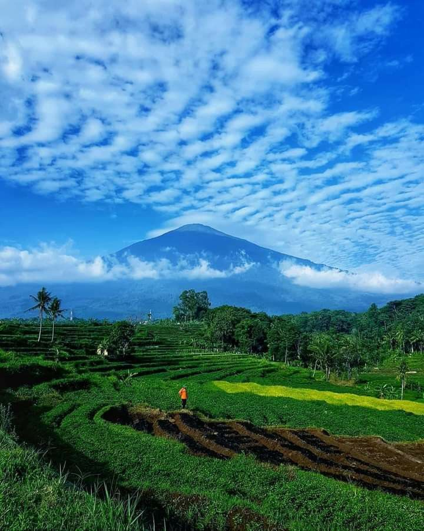
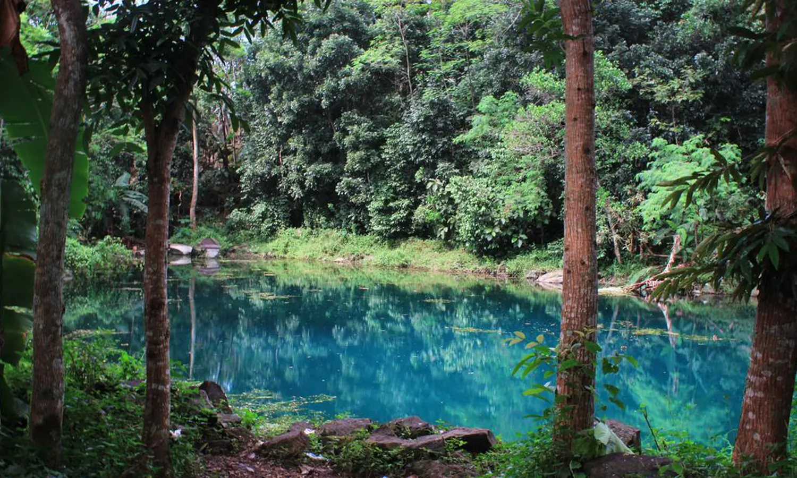
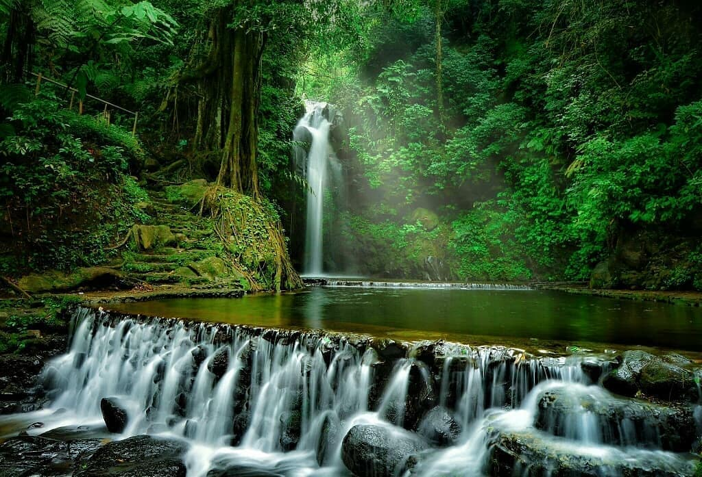
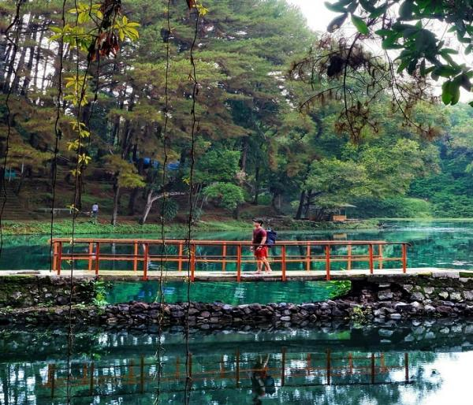
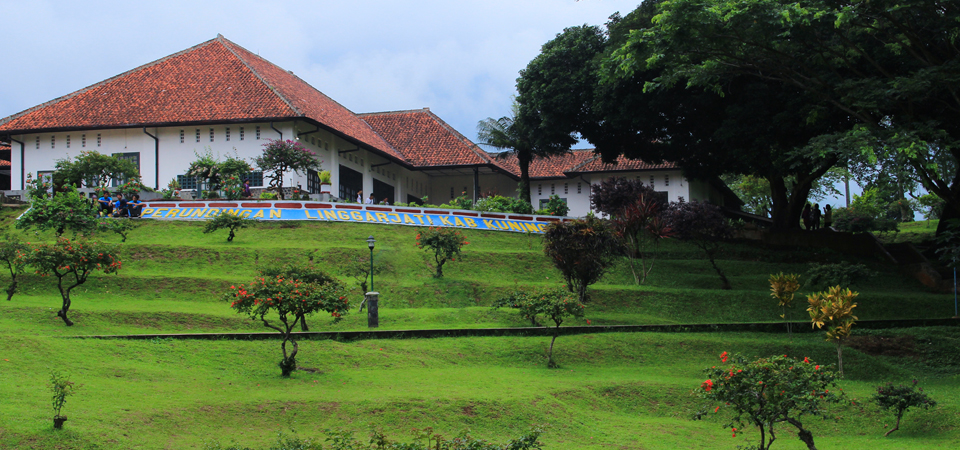
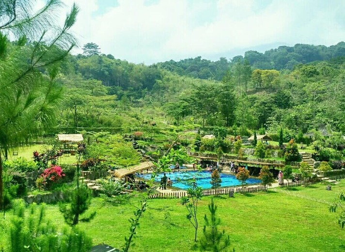
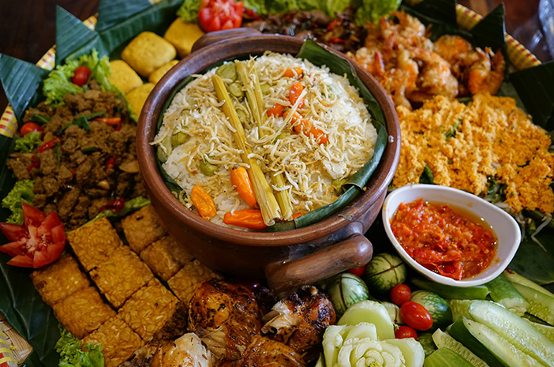
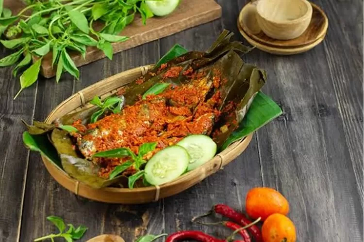
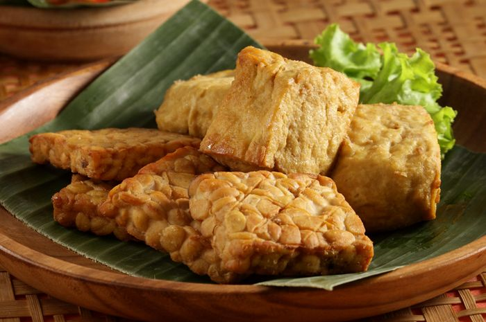
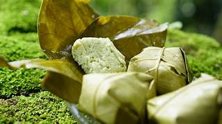

kuningan adalah kabupaten di jawa barat yang berada di kaki gunung
ciremai,udara sejuk,alam indah,dan sumber air jernih menjadi ciri
khasnya.wisata populer meliputi telaga remis,telaga biru,dan curug
puri,kuningan kaya budaya,sejarah,kuliner,serta masyarakat ramah
dan menjunjung gotong royong
Destinasi wisata
gunung ciremai

Gunung Ciremai adalah gunung tertinggi di Jawa Barat dengan
ketinggian 3.078 mdpl. Menawarkan pendakian melalui jalur seperti
Apuy, Linggarjati, atau Palutungan. Puncaknya menyajikan
pemandangan spektakuler, terutama saat sunrise. Terdapat hutan
montane, kawah, dan spot camping. Cocok untuk pecinta alam dan
petualang.
telaga biru

telaga Biru adalah danau kecil di Kuningan dengan air berwarna
biru kehijauan alami. Dikelilingi pepohonan rindang dan tebing
batu, menciptakan suasana tenang. Spot populer untuk foto, piknik,
atau sekadar menikmati udara segar. Airnya jernih dan dipercaya
memiliki kandungan belerang.
curug putih

Curug Putih adalah air terjun setinggi 50 meter di Majalengka
dengan air berwarna putih akibat mineral kapur. Lingkungannya
masih asri, dikelilingi bebatuan besar dan hutan. Cocok untuk
trekking santai, berenang di kolam alami, atau menikmati
eksotisnya alam.
telaga remis

Telaga Remis terletak di Kuningan, berbentuk seperti kerang
(remis). Airnya tenang dengan pemandangan bukit dan sawah
terasering. Fasilitasnya lengkap: perahu kayuh, spot memancing,
dan warung makan. Cocok untuk keluarga atau wisata romantis saat
senja.
museum linggarjati

Museum bersejarah di Kuningan ini adalah tempat penandatanganan
Perjanjian Linggarjati (1946). Bangunannya bergaya kolonial
Belanda, berisi diorama, foto, dan artefak perjuangan kemerdekaan.
Edukatif untuk memahami sejarah Indonesia.
desa cibuntu

Desa adat di Kuningan yang mempertahankan budaya Sunda.
Aktivitasnya meliputi homestay, belajar tari tradisional,
membatik, atau melihat proses pembuatan gula kelapa. Alamnya asri
dengan sawah dan sungai jernih. Pengalaman wisata berbasis
komunitas.
makanan khas
nasi liwet

Nasi liwet adalah hidangan khas Sunda berupa nasi gurih dimasak
dengan santan, daun salam, dan bawang. Biasanya disajikan dengan
lauk seperti ayam, telur, dan sambal terasi. Cocok dinikmati
bersama keluarga, rasanya gurih dan aromatik.
pepes ikan mas

Ikan mas dibumbui kunyit, bawang, dan kemangi, lalu dibungkus daun
pisang dan dikukus. Teksturnya lembut dengan rasa pedas-gurih
alami. Pepes ikan mas sering ditemui di daerah Jawa Barat, cocok
dinikmati dengan nasi hangat.
keripik tempe
Keripik tempe terbuat dari tempe iris tipis yang digoreng kering
hingga renyah. Dibumbui bawang, ketumbar, atau rasa pedas. Camilan
gurih ini populer sebagai oleh-oleh khas Jawa Barat dan tahan
lama.
tahu tempe

Tahu tempe adalah duo legendaris masakan Indonesia, sering diolah
bersama dengan bumbu kecap, bawang, dan cabai. Tahu (kedelai)
lembut dan tempe (fermentasi kedelai) gurih, cocok digoreng,
dibacem, atau disayur. Kaya protein, murah, dan serbaguna, jadi
favorit sehari-hari!
peuyeum

Tahu tempe adalah duo legendaris masakan Indonesia, sering diolah
bersama dengan bumbu kecap, bawang, dan cabai. Tahu (kedelai)
lembut dan tempe (fermentasi kedelai) gurih, cocok digoreng,
dibacem, atau disayur. Kaya protein, murah, dan serbaguna, jadi
favorit sehari-hari!